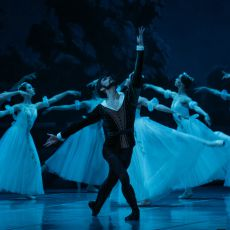

События

01.05.2022
Классика в Мариинке
В мае Театр балета имени Леонида Якобсона продолжит показ своих
лучших классических спектаклей на легендарной сцене Мариинского
театра. 7 мая в 12.00 и 28 мая в 11.30 наш театр покажет на Основной
сцене Мариинского театра самый известный в мире балет Петра Ильича
Чайковского в хореографии Мариуса Петипа и Льва Иванова «Лебединое
озеро».
Подробнее...

30.04.2022
Премьера в «Жизели»
30 апреля на Основной сцене Мариинского театра в спектакле Театра
балета имени Леонида Якобсона «Жизель» состоялось первое выступление
Дениса Климука в роли лесничего Ганса. Поздравляем талантливого
артиста с премьерой и желаем новых интересных ролей!
Подробнее...

18.04.2022
«Большие гастроли» во Владикавказе
22 и 23 апреля в рамках Всероссийского проекта «Большие гастроли»
Театр балета имени Леонида Якобсона под руководством заслуженного
артиста России Андриана Фадеева выступит во Владикавказе. На сцене
Филиала Мариинского театра в Республике Северная Осетия - Алания
пройдут показы балета «Дон Кихот». Этот спектакль в постановке Йохана
Кобборга с момента премьеры стал фаворитом театральной афиши и получил
признание зрителей не только в России, но и за рубежом.
Подробнее...

13.04.2022
Поздравляем дебютантов!
Проект «Апрельский сезон: Золотая коллекция Театра имени Якобсона»
продолжает радовать дебютами. 10 апреля на сцене Александринского
театра в «Лебедином озере» молодая артистка нашего театра Ирина
Корякова впервые выступила в Испанском танце. А 12 апреля на той же
площадке в спектакле «Жизель» состоялись сразу три премьеры.
Подробнее...